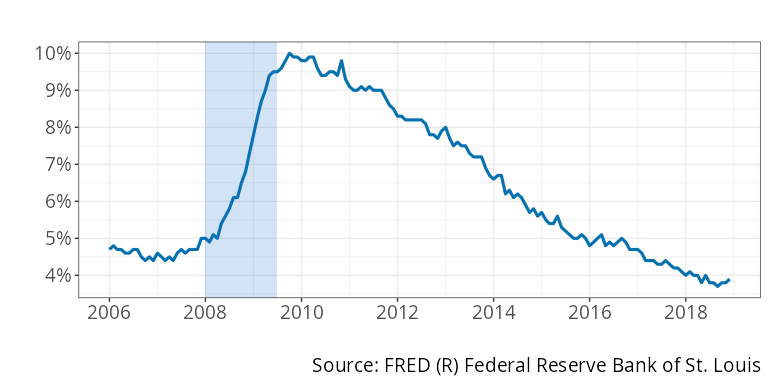
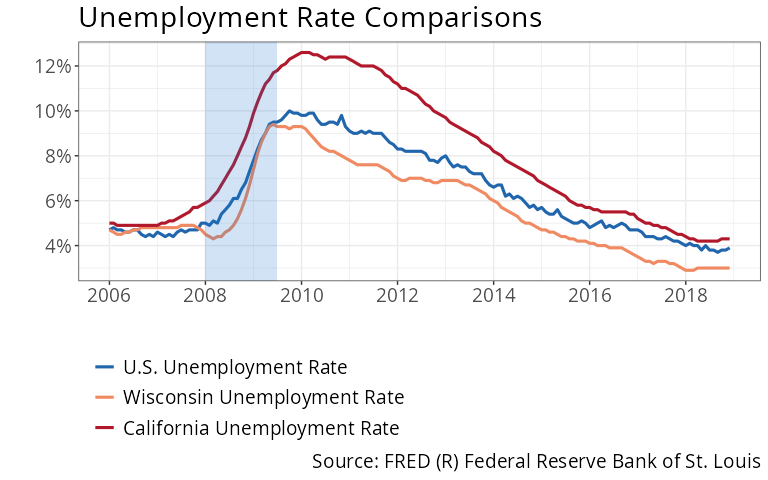
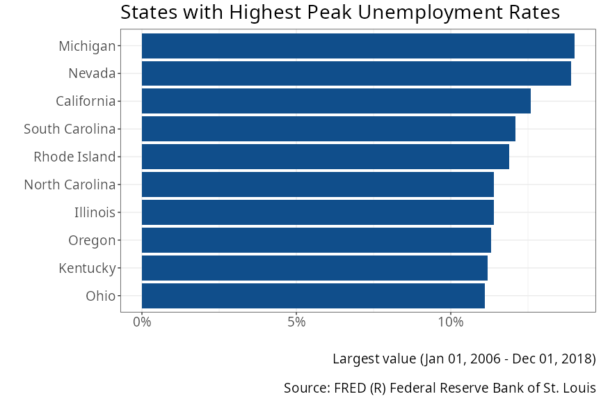
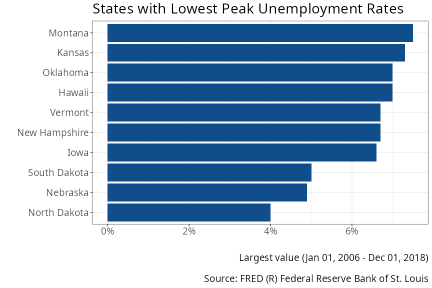

unemployment_recessions.RmdIn this vignette, we will look at unemployement rates before, during, and after the 2008-2009 recession in the United States, and compare the experiences across U.S. states.
Download data from FRED for the United States unemployment rate, and the state-level unemployment rates for Wisconsin and California, for 2006 through 2018.
Plot the national unemployment rate. Describe what happened the the national unemployment rate during the 2008-2009 recession, and following the recession.
When did the recession end? Was the national unemployment rate low again as soon as the recession ended? If not, describe at what level the unemployment rate began as the recession ended, and how long it took to get to pre-recession levels.
Plot the unemployment rates for Wisconsin, California, and the nation as a whole. How did the unemployment experience in each state compare to the national average? Was the unemployment rate larger or smaller in each state than the country. Did the unemployment rate in each state start to fall before or after the national unemployment rate?
Download data on unemployment rate for all states, for 2006 through 2018. Make a bar plot of the maximum unemployment reached for the top ten states and the lowest ten states.
The following are the variables for the national unemployment rate and the unemployment rates for Wisconsin and California:
U.S. unemployment rate: https://fred.stlouisfed.org/series/UNRATE
Wisconsin unemployment rate: https://fred.stlouisfed.org/series/WIUR
California unemployment rate: hhttps://fred.stlouisfed.org/series/CAUR
Load the tidyverse and ecodata libraries and download the data:
library(tidyverse)
library(ecodata)
# Identify the data
data_sources <- c(
"https://fred.stlouisfed.org/series/UNRATE",
"https://fred.stlouisfed.org/series/WIUR",
"https://fred.stlouisfed.org/series/CAUR"
)
variable_names <- c("U.S. Unemployment Rate", "Wisconsin Unemployment Rate", "California Unemployment Rate")
# Download the data
udata <- get_ecodata(data_sources, variable_names)
# Filter for only 2006-2013
udata <- udata |>
filter(Date >= "2006-01-01", Date <= "2018-12-31")
# View the data
glimpse(udata)#>
#> Rows: 156
#> Columns: 4
#> $ Date <date> 2006-01-01, 2006-02-01, 2006-03-01, 20…
#> $ `U.S. Unemployment Rate` <dbl> 4.7, 4.8, 4.7, 4.7, 4.6, 4.6, 4.7, 4.7,…
#> $ `Wisconsin Unemployment Rate` <dbl> 4.7, 4.6, 4.5, 4.5, 4.6, 4.6, 4.7, 4.7,…
#> $ `California Unemployment Rate` <dbl> 5.0, 5.0, 4.9, 4.9, 4.9, 4.9, 4.9, 4.9,…
ecodata_description_table(udata)Variable |
Code |
Description |
Frequency |
Units |
Seasonal Adjustment |
Source |
URL |
Access Date |
|---|---|---|---|---|---|---|---|---|
U.S. Unemployment Rate |
UNRATE |
Unemployment Rate |
Monthly |
% |
Seasonally Adjusted |
FRED (R) Federal Reserve Bank of St. Louis |
October 31, 2024 |
|
Wisconsin Unemployment Rate |
WIUR |
Unemployment Rate in Wisconsin |
Monthly |
% |
Seasonally Adjusted |
FRED (R) Federal Reserve Bank of St. Louis |
October 31, 2024 |
|
California Unemployment Rate |
CAUR |
Unemployment Rate in California |
Monthly |
% |
Seasonally Adjusted |
FRED (R) Federal Reserve Bank of St. Louis |
October 31, 2024 |
Below we plot the national unemployment rate.
ggplot_ecodata_ts(udata, variables = "U.S. Unemployment Rate", plot.recessions = TRUE)
The recession ended in June 2009. The unemployment rate reached a peak of about 10% in September 2009. The unemployment rate remained high for several years, not returning to pre-recession levels of about 4.5% until 2017.
Here are the unemployment rates for the whole United States compared with California and Wisconsin.
ggplot_ecodata_ts(udata, plot.recessions = TRUE, title = "Unemployment Rate Comparisons")
California experienced a larger and more-prolonged recession than the nation as a whole. The unemployment rate in California began to rise before the recessions and before the national unemployment rate. Unemployment reached a higher level in California of approximately 12.5%. Unemployment did not return to pre-recession levels until 2018.
Wisconsin experienced a smaller and less-prolonged recession than the nation as a whole. Its unemployment rate did not start to rise until 6 months after the recession began. The maximum unemployment rate reached in Wisconsin was just above 9%, and Wisconsin returned to pre-recession levels by 2015.
The following code downloads unemployment rate data for all U.S. states. You only need to pass in the URL or variable code for one U.S. state, and the function will retrieve them all.
all_states <- get_ecodata_allstates_fred("https://fred.stlouisfed.org/series/WIUR")
all_states <- all_states |>
filter(Date >= "2006-01-01", Date <= "2018-12-31")The following function creates a bar plot of the peak unemployment rate in the states that experienced the highest peak unemployment rates during the time period.
The plot_at = "largest" parameter causes the function to
plot each state’s highest value experienced during the time period. The
highest = 10 parameter causes the function to only plot the
states with the 10 highest values.
ggplot_ecodata_bar(all_states,
title = "States with Highest Peak Unemployment Rates",
plot_at = "largest", highest = 10)
The following function creates a bar plot of the peak unemployment
rate in the states that experienced the lowest peak unemployment rates
during the time period. The lowest = 10 parameter causes
the function to only plot the states with the 10 lowest values.
ggplot_ecodata_bar(all_states,
title = "States with Lowest Peak Unemployment Rates",
plot_at = "largest", lowest = 10)